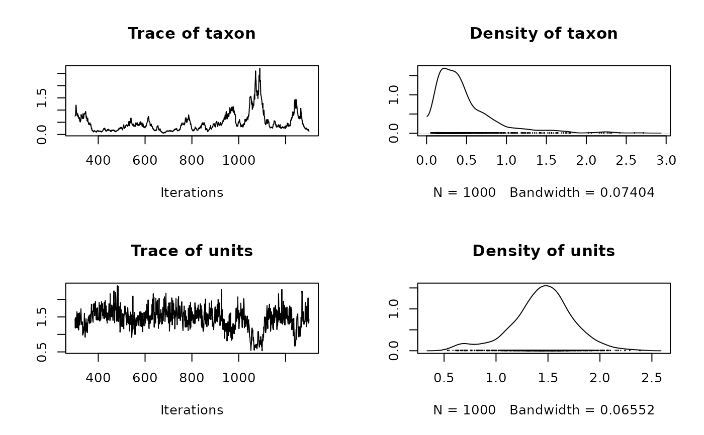

Multivariate Generalised Linear Mixed Models
MCMCglmm.RdMarkov chain Monte Carlo Sampler for Multivariate Generalised Linear Mixed
Models with special emphasis on correlated random effects arising from pedigrees
and phylogenies (Hadfield 2010). Please read the course notes: vignette("CourseNotes",
"MCMCglmm") or the overview vignette("Overview", "MCMCglmm")
Usage
MCMCglmm(fixed, random=NULL, rcov=~units, family="gaussian", mev=NULL,
data,start=NULL, prior=NULL, tune=NULL, pedigree=NULL, nodes="ALL",
scale=TRUE, nitt=13000, thin=10, burnin=3000, pr=FALSE,
pl=FALSE, verbose=TRUE, DIC=TRUE, singular.ok=FALSE, saveX=TRUE,
saveZ=TRUE, saveXL=TRUE, slice=FALSE, ginverse=NULL, trunc=FALSE,
theta_scale=NULL, saveWS=TRUE, aggregate=NULL, longer=1)Arguments
- fixed
formulafor the fixed effects, multiple responses are passed as a matrix using cbind- random
formulafor the random effects. Multiple random terms can be passed using the+operator, and in the most general case each random term has the formvariance.function(formula):linking.function(random.terms). Currently, the onlyvariance.functionsavailable areidv,idh,us,cor[]andante[].idvfits a constant variance across all components informula. Bothidhandusfit different variances across each component informula, butuswill also fit the covariances.corgfixes the variances along the diagonal to one andcorghfixes the variances along the diagonal to those specified in the prior.corsallows correlation submatrices.ante[]fits ante-dependence structures of different order (e.g ante1, ante2), and the number can be prefixed by acto hold all regression coefficients of the same order equal. The number can also be suffixed by avto hold all innovation variances equal (e.gantec2vhas 3 parameters). Theformulacan contain both factors and numeric terms (i.e. random regression) although it should be noted that the intercept term is suppressed. The (co)variances are the (co)variances of therandom.termseffects. Currently, the onlylinking.functionsavailable aremmandstr.mmfits a multimembership model where multiple random terms are separated by the+operator.strallows covariances to exist between multiple random terms that are also separated by the+operator. In both cases the levels of all multiple random terms have to be the same. For simpler models thevariance.function(formula)andlinking.function(random.terms)can be omitted and the model syntax has the simpler form~random1+random2+.... There are two reserved variables:unitswhich index rows of the response variable andtraitwhich index columns of the response variable- rcov
formulafor residual covariance structure. This has to be set up so that each data point is associated with a unique residual. For example a multi-response model might have the R-structure defined by~us(trait):units- family
optional character vector of trait distributions. Currently,
"gaussian","poisson","categorical","multinomial","ordinal","threshold","exponential","geometric","cengaussian","cenpoisson","cenexponential","zipoisson","zapoisson","ztpoisson","hupoisson","zibinomial","threshold","nzbinom","ncst","msst","hubinomial","ztmb"and"ztmultinomial"are supported, where the prefix"cen"means censored, the prefix"zi"means zero inflated, the prefix"za"means zero altered, the prefix"zt"means zero truncated and the prefix"hu"means hurdle. IfNULL,dataneeds to contain afamilycolumn.- mev
optional vector of measurement error variances for each data point for random effect meta-analysis.
- data
data.frame- start
optional list having 5 possible elements:
R(R-structure)G(G-structure) andLiab(latent variables or liabilities) should contain the starting values whereGitself is also a list with as many elements as random effect components. The elementQUASIshould be logical: ifTRUEstarting latent variables are obtained heuristically, ifFALSEthen they are sampled from a Z-distribution. The elementrshould be be between -1 and 1 and determines the correlation between the starting latent variables and the ordered latent variables (ordered by the response variable): the default is 0.8.- prior
optional list of prior specifications having 4 possible elements:
R(R-structure)G(G-structure),B(fixed effects) andS(theta_scale parameter).BandSare lists containing the expected value (mu) and a (co)variance matrix (V) representing the strength of belief: the defaults areB$mu=S$mu=0 andB$V=S$V=I*1e+10, where where I is an identity matrix of appropriate dimension. The priors for the variance structures (RandG) are lists with the expected (co)variances (V) and degree of belief parameter (nu) for the inverse-Wishart (note this parameterisation is non-standard - see rIW), and also the mean vector (alpha.mu) and covariance matrix (alpha.V) for the redundant working parameters. The defaults arenu=0,V=1,alpha.mu=0, andalpha.V=0. Whenalpha.Vis non-zero, parameter expanded algorithms are used.- tune
optional list with elements
mh_Vand/ormh_weightsmh_Vshould be a list with as many elements as there are R-structure terms with each element being the (co)variance matrix defining the proposal distribution for the associated latent variables. If NULL an adaptive algorithm is used which ceases to adapt once the burn-in phase has finished.mh_weightsshould be equal to the number of latent variables and acts as a scaling factor for the proposal standard deviations.- pedigree
ordered pedigree with 3 columns id, dam and sire or a
phyloobject. This argument is retained for back compatibility - see ginverse argument for a more general formulation.- nodes
pedigree/phylogeny nodes to be estimated. The default,
"ALL"estimates effects for all individuals in a pedigree or nodes in a phylogeny (including ancestral nodes). For phylogenies"TIPS"estimates effects for the tips only, and for pedigrees a vector of ids can be passed tonodesspecifying the subset of individuals for which animal effects are estimated. Note that all analyses are equivalent if omitted nodes have missing data but by absorbing these nodes the chain max mix better. However, the algorithm may be less numerically stable and may iterate slower, especially for large phylogenies.- scale
logical: should the phylogeny (needs to be ultrametric) be scaled to unit length (distance from root to tip)?
- nitt
number of MCMC iterations
- thin
thinning interval
- burnin
burnin
- pr
logical: should the posterior distribution of random effects be saved?
- pl
logical: should the posterior distribution of latent variables be saved?
- verbose
logical: if
TRUEMH diagnostics are printed to screen- DIC
logical: if
TRUEdeviance and deviance information criterion are calculated- singular.ok
logical: if
FALSElinear dependencies in the fixed effects are removed. ifTRUEthey are left in an estimated, although all information comes form the prior- saveX
logical: save fixed effect design matrix
- saveZ
logical: save random effect design matrix
- saveXL
logical: save structural parameter design matrix
- slice
logical: should slice sampling be used? Only applicable for binary traits with independent residuals
- ginverse
a list of sparse inverse matrices (\({\bf A^{-1}}\)) that are proportional to the covariance structure of the random effects. The names of the matrices should correspond to columns in
datathat are associated with the random term. All levels of the random term should appear as rownames for the matrices.- trunc
logical: should latent variables in binary models be truncated to prevent under/overflow (+/-20 for categorical/multinomial models and +/-7 for threshold/probit models)?
- theta_scale
optional list of 4 possible elements specifying a set of location effects (fixed or random) that are to be scaled by the parameter
theta_scalefor the subset of observations which have levellevelin factorfactor:factor,level,fixed(position of fixed terms to be scaled) andrandom(position of random effect components).- saveWS
logical: save design matrix for scaled effects.
- aggregate
character: names of long-format variables to be formed from wide-format variables in multi-trait models. Wide-format variables should have the long-format variable name followed by an underscore and then the trait name. For example, a wide-format data frame might have variable names
y1,y2,x_y1,x_y2. If a multi-trait model is fitted fory1andy2thenaggregate="x"generates the new variablex=c(x_y1, x_y2).- longer: positive integer that multiples
nitt,thinandburnin
Value
- Sol
Posterior Distribution of MME solutions, including fixed effects
- VCV
Posterior Distribution of (co)variance matrices
- CP
Posterior Distribution of cut-points from an ordinal model
- Liab
Posterior Distribution of latent variables
- Fixed
list: fixed formula and number of fixed effects
- Random
list: random formula, dimensions of each covariance matrix, number of levels per covariance matrix, and term in random formula to which each covariance belongs
- Residual
list: residual formula, dimensions of each covariance matrix, number of levels per covariance matrix, and term in residual formula to which each covariance belongs
- Deviance
deviance -2*log(p(y|...))
- DIC
deviance information criterion
- X
sparse fixed effect design matrix
- Z
sparse random effect design matrix
- XL
sparse structural parameter design matrix
- error.term
residual term for each datum
- family
distribution of each datum
- Tune
(co)variance matrix of the proposal distribution for the latent variables
- meta
logical; was
mevpassed?- Wscale
sparse design matrix for scaled terms.
References
General analyses: Hadfield, J.D. (2010) Journal of Statistical Software 33 2 1-22
Phylogenetic analyses: Hadfield, J.D. & Nakagawa, S. (2010) Journal of Evolutionary Biology 23 494-508
Background Sorensen, D. & Gianola, D. (2002) Springer
Author
Jarrod Hadfield j.hadfield@ed.ac.uk
Examples
# Example 1: univariate Gaussian model with standard random effect
data(PlodiaPO)
model1<-MCMCglmm(PO~1, random=~FSfamily, data=PlodiaPO, verbose=FALSE,
nitt=1300, burnin=300, thin=1)
summary(model1)
#>
#> Iterations = 301:1300
#> Thinning interval = 1
#> Sample size = 1000
#>
#> DIC: -239.78
#>
#> G-structure: ~FSfamily
#>
#> post.mean l-95% CI u-95% CI eff.samp
#> FSfamily 0.01027 0.005385 0.01579 414.1
#>
#> R-structure: ~units
#>
#> post.mean l-95% CI u-95% CI eff.samp
#> units 0.0341 0.02966 0.03843 826.9
#>
#> Location effects: PO ~ 1
#>
#> post.mean l-95% CI u-95% CI eff.samp pMCMC
#> (Intercept) 1.163 1.132 1.195 1463 <0.001 ***
#> ---
#> Signif. codes: 0 ‘***’ 0.001 ‘**’ 0.01 ‘*’ 0.05 ‘.’ 0.1 ‘ ’ 1
# Example 2: univariate Gaussian model with phylogenetically correlated
# random effect
data(bird.families)
phylo.effect<-rbv(bird.families, 1, nodes="TIPS")
phenotype<-phylo.effect+rnorm(dim(phylo.effect)[1], 0, 1)
# simulate phylogenetic and residual effects with unit variance
test.data<-data.frame(phenotype=phenotype, taxon=row.names(phenotype))
Ainv<-inverseA(bird.families)$Ainv
# inverse matrix of shared phyloegnetic history
prior<-list(R=list(V=1, nu=0.002), G=list(G1=list(V=1, nu=0.002)))
model2<-MCMCglmm(phenotype~1, random=~taxon, ginverse=list(taxon=Ainv),
data=test.data, prior=prior, verbose=FALSE, nitt=1300, burnin=300, thin=1)
plot(model2$VCV)
